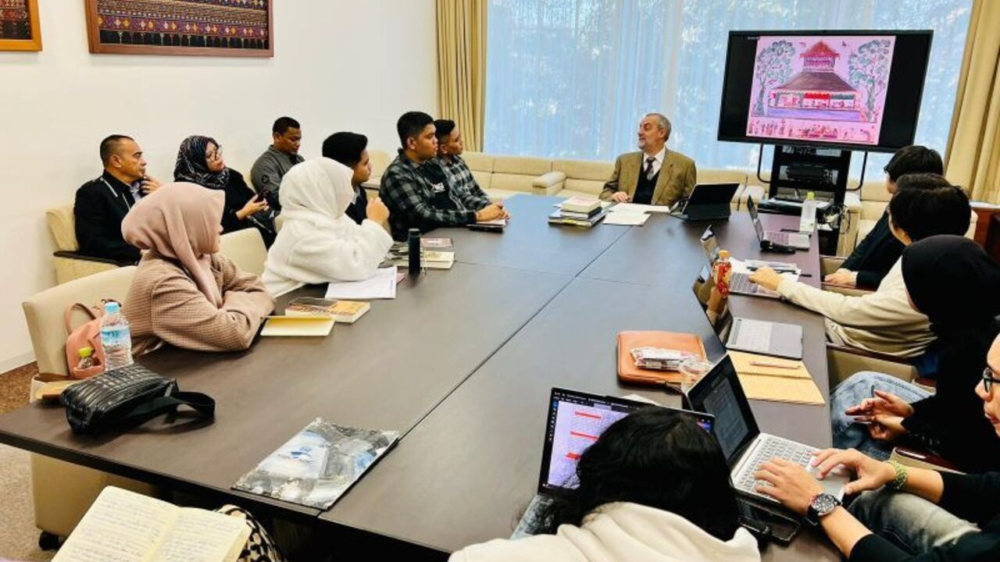
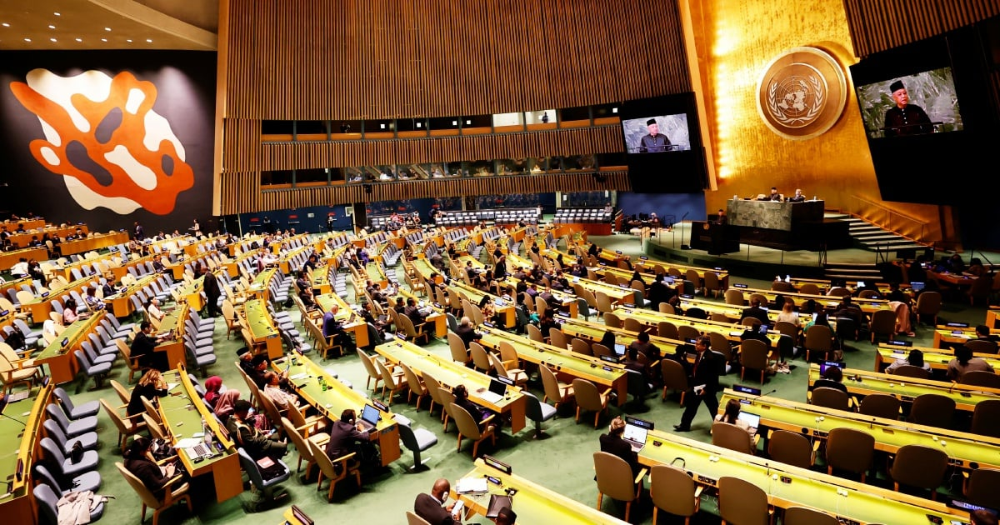

Setelah memahami penjelasan dan beberapa contoh dari Sustainable Development Goals, serta berbagai macam kerjasama internasional, kita dapat mengetahui bagaimana tepatnya kedua topik tersebut saling terkait satu dengan yang lainnya beserta alasan mengapa. Agar dapat melakukannya, mari kita mengulas sedikit mengenai kedua materi tersebut yang berbeda, tetapi masih bisa saling melengkapi.
Singkatnya, Sustainable Development Goals dapat diartikan sebagai 17 tujuan yang telah disusun oleh UN untuk menciptakan lingkungan yang jauh lebih damai dan penuh cinta dan belas kasih bagi semua. Tujuan tersebut tentu saja diisi dengan target–target dan berbagai macam indikator, sehingga tujuan yang telah dibuat akan memiliki visi mengenai apa yang seharusnya dicapai dan diingat di masa yang akan mendatang. Tujuan–tujuan khusus ini dapat memastikan bahwa tidak hanya pemerintah yang bertanggung jawab atas tugas–tugas seperti ini, tetapi masyarakat, warga negara, dan organisasi lain mendapatkan hak untuk berpartisipasi dalam berbagai kegiatan untuk lebih meningkatkan kesempatan dalam mencapai semua 17 tujuan SDGs tersebut.
Lalu, ada berbagai jenis kerjasama, yakni kerjasama bilateral, regional, dan multilateral. Mulalui hal ini, bangsa–bangsa dapat bersatu dan saling bekerja sama untuk memberi manfaat dan memajukan sejumlah aspek kehidupan sehingga dunia semakin berkembamg.
Kedua topik ini saling melengkapi dengan sangat baik karena keduanya terutama fokus terhadap upaya dalam menjadikan dunia sebagai tempat yang lebih baik bagi setiap makhluk hidup. Tujuan ini diciptakan agar lingkungan di sekitar, ekonomi, layanan kesehatan, dan keamanan setiap individu dapat terlindungi dengan baik dan aman dari segala bahaya. Namun, 17 tujuan yang telah dibuat tidak dapat dicapai oleh satu negara saja karena diperlukan kerjasama dari berbagai organisasi dan bangsa lain agar tujuan–tujuan tersebut dapat tercapai dalam jangka waktu yang lebih cepat dan terus meningkat seiring berjalannya waktu.
Ketika berbagai negara berperan aktif dalam bekerjasama, seperti saling membantu membangun infrastruktur dan meningkatkan persediaan medis, hal tersebut tidak hanya akan menguntungkan negara mereka sendiri, tetapi juga negara yang bekerjasama dengan mereka. Sesuatu seperti ini akan menciptakan hubungan yang lebih kuat atau personal hingga pada titik di mana isu–isu global seperti perdagangan manusia dan kualitas udara buruk dapat diselesaikan dan dihentikan.
Apabila disimpulkan lebih lanjut, mekanisme yang menghubungkan SDGs dan kerjasma adalah kerangka kerja yang saling menguntungkan dan mendorong kolaborasi global. Contoh lebih lanjut yang dapat ditemukan dalam penjelasan di atas adalah poin–poin berikut:
1. SDGs berfokus kepada bagaimana caranya mencegah isu–isu global dari menyebar lebih lanjut dan supaya target–target positif dapat dicapai. Kerjasama internasional memastikan bahwa semua tujuan tersebut akan diselesaikan lebih cepat dan agar dapat dilaksanakan dengan metode yang jauh lebih efektif.
2. Kolaborasi dapat mengatasi tantangan–tantangan tertentu, baik itu antara dua negara, di dalam kawasan tertentu, atau secara global. Negara–negara yang bekerjasama dapat memajukan setiap pihak yang terlibat, seperti meningkatkan pertumbuhan ekonomi, disertakan dengan mengelola migrasi lintas batas.
3. Melalui semua bentuk kerjasama ini, negara–negara dan berbagai bangsa akan meningkatkan rasa saling menghormati dan percaya terhadap sesama, yang selanjutnya akan mempererat hubungan mereka untuk terus bekerja sama dan memperoleh manfaat dari koperasi mereka.
